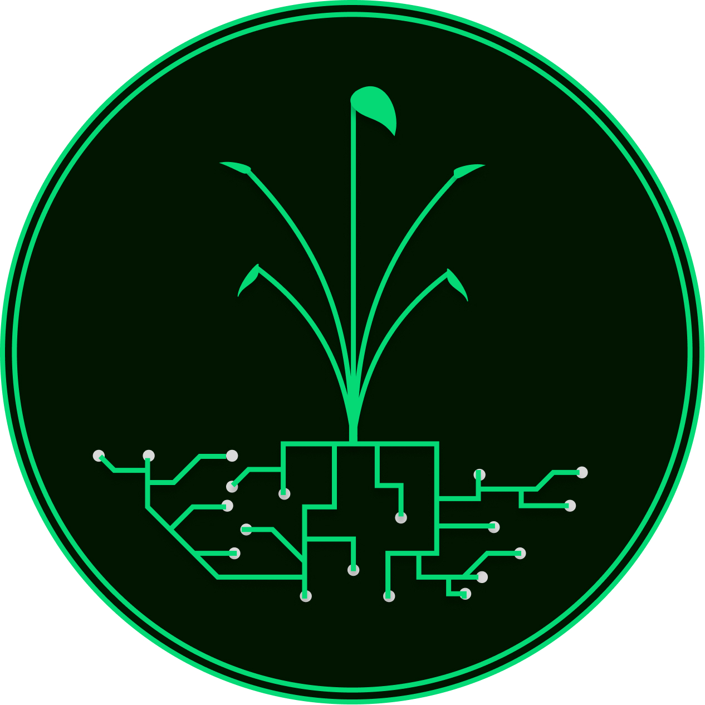

SOLUÇÃO
Greenrise
Sistema de Fazenda Vertical com Inteligência Artificial e Automação Completa
Greenrise é a solução completa para quem quer implementar fazendas verticais inteligentes. Com sensores avançados, controle automatizado e IA que aprende continuamente.
Características Principais:
- ✓ 7 componentes integrados para automação total
- ✓ Sensores de temperatura, umidade, pH, CO₂ e nutrientes
- ✓ Rede neural treinada para decisões autônomas
- ✓ Controle de iluminação LED, irrigação e nutrição
- ✓ Banco de dados em tempo real para análises
Resultados Esperados:
90% redução de água
80% menos pesticidas
3x mais colheitas/ano
Alinhamento ODS:
ODS 2 • ODS 9 • ODS 11 • ODS 12